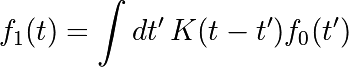
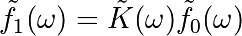

Note
Click here to download the full example code
Image denoising by FFT¶
Denoise an image (../../../../data/moonlanding.png) by
implementing a blur with an FFT.
{kind=link}
Implements, via FFT, the following convolution:


Read and plot the image¶
import numpy as np
import matplotlib.pyplot as plt
im = plt.imread('../../../../data/moonlanding.png').astype(float)
plt.figure()
plt.imshow(im, plt.cm.gray)
plt.title('Original image')
Compute the 2d FFT of the input image¶
from scipy import fftpack
im_fft = fftpack.fft2(im)
# Show the results
def plot_spectrum(im_fft):
from matplotlib.colors import LogNorm
# A logarithmic colormap
plt.imshow(np.abs(im_fft), norm=LogNorm(vmin=5))
plt.colorbar()
plt.figure()
plot_spectrum(im_fft)
plt.title('Fourier transform')
Filter in FFT¶
# In the lines following, we'll make a copy of the original spectrum and
# truncate coefficients.
# Define the fraction of coefficients (in each direction) we keep
keep_fraction = 0.1
# Call ff a copy of the original transform. Numpy arrays have a copy
# method for this purpose.
im_fft2 = im_fft.copy()
# Set r and c to be the number of rows and columns of the array.
r, c = im_fft2.shape
# Set to zero all rows with indices between r*keep_fraction and
# r*(1-keep_fraction):
im_fft2[int(r*keep_fraction):int(r*(1-keep_fraction))] = 0
# Similarly with the columns:
im_fft2[:, int(c*keep_fraction):int(c*(1-keep_fraction))] = 0
plt.figure()
plot_spectrum(im_fft2)
plt.title('Filtered Spectrum')
Reconstruct the final image¶
# Reconstruct the denoised image from the filtered spectrum, keep only the
# real part for display.
im_new = fftpack.ifft2(im_fft2).real
plt.figure()
plt.imshow(im_new, plt.cm.gray)
plt.title('Reconstructed Image')
Easier and better: scipy.ndimage.gaussian_filter()¶
Implementing filtering directly with FFTs is tricky and time consuming. We can use the Gaussian filter fromscipy.ndimage
from scipy import ndimage
im_blur = ndimage.gaussian_filter(im, 4)
plt.figure()
plt.imshow(im_blur, plt.cm.gray)
plt.title('Blurred image')
plt.show()
Total running time of the script: ( 0 minutes 0.211 seconds)